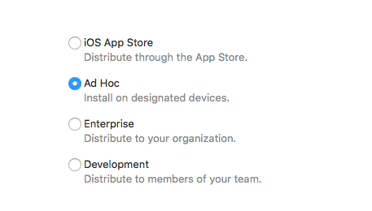

iOS推送证书相关
Feb 6, 2020
iOS的推送证书有两种： iOS Development和iOS Distribution，一般开发式使用iOS Development，测试真是环境(Distribution)的话，必须是：
- Download app from App store
- Download app from TestFlight
- AdHoc
拥有Admin以上权限的Apple Developer
首先，要先有 distribution certificate，到 Apple Developer 登录 -> Certificates, Identifiers & Profiles-> Certificates ，选择Production，照着步骤新增Certificate。
接着到Provisioning Profiles-> Distribution，建立一个AdHoc的Distribution。一步步完成后进行下载到本地后，双击进行安装。
接着到你的iOS project，Target->General的Signing选择对应的provisionProfile。
以上设置完成以后，接着就到Product-> Archive ，Build successful后选择Distribute App。

一步步完成后就可以Export出來了。